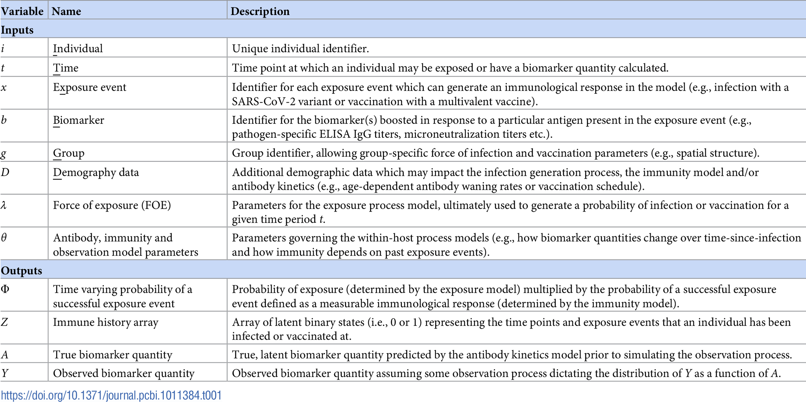

vignettes/naming_convention.Rmd
naming_convention.RmdThe names below are used throughout the package documentation. They describe the main inputs, model quantities, and outputs rather than particular datasets.
| Name | Meaning |
|---|---|
individual |
Identifier for a person. IDs should normally run from 1
to N without gaps. |
sample_time |
Time at which an antibody measurement was taken. |
birth |
Birth time used to determine which exposure times an individual could have experienced. |
possible_exposure_times |
Times at which an infection or other exposure can occur in the model. |
biomarker_id |
Identifier for the antigen, strain, or other biomarker being measured. |
biomarker_group |
Identifier for a separate observation and antibody-kinetics model, such as titre or avidity. |
population_group |
Group used to apply different infection-history priors or summarise attack rates. |
measurement |
Observed antibody or other biomarker value. |
antibody_data |
Data frame containing the serological measurements and their identifiers and times. |
demographics |
Optional data frame containing fixed or time-varying demographic covariates. |
par_tab |
Model control table containing parameter values, bounds, fixed/estimated status, and related settings. |
inf_chain |
MCMC draws for the latent infection histories. |
theta_chain |
MCMC draws for antibody-kinetics, observation, and related model parameters. |
The current interface uses the following names in place of the names
used by the published version of serosolver. The main
change is from terminology based on influenza titres and strains to
terminology that also covers other pathogens, assays, and biomarker
types. See the published package
and model description for the original notation and workflow.
| Current name | Published name | Meaning |
|---|---|---|
antibody_data |
titre_dat |
Main long-format serological data frame. |
sample_time |
samples |
Time at which a sample was taken. |
biomarker_id |
virus |
Identifier for the antigen, strain, or biomarker being measured. |
measurement |
titre |
Observed antibody or biomarker value. |
repeat_number |
run |
Identifier for a repeated measurement of the same sample and biomarker. |
birth |
DOB |
Birth time used when determining possible exposure times. |
population_group |
group |
Group used for infection-history priors and attack-rate summaries. |
possible_exposure_times |
strain_isolation_times or
circulation_times
|
Times at which an infection or exposure can occur. |
prior_version |
version |
Infection-history prior version used by the model. |
biomarker_group and the separate
demographics data frame are part of the expanded current
interface and do not have a single direct equivalent in the published
input table. They allow different observation types and fixed or
time-varying covariates to be represented explicitly.
The figure below is from the serosim
paper. It gives the corresponding mathematical notation and includes
some additional model quantities. It is useful when comparing the
current package interface with the notation used in the published
version of serosolver, where some names and definitions
differ.

Key serosolver variable terminology and its relationship to the model notation.